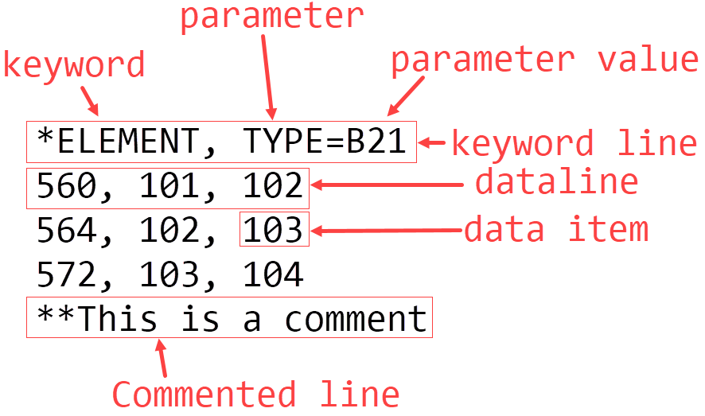

inpKeyword Basics¶
The inpKeyword object is the foundation of inpRW. It defines the structure of information parsed
from the input file, so understanding how the data is stored inside an inpKeyword object is necessary to
working with inpRW.
Abaqus Keyword Block Terminology¶
First, let’s define the different parts of an Abaqus keyword block.
A keyword block has a keyword line(s), which is composed of a keyword and 0 or more parameters[2]. Immediately following the keyword line are 0 or more datalines. The individual data items in a dataline are separated by commas. Finally, any line in the input file can be commented out with ‘**’.
For more information on Abaqus input files, please see Input Syntax Rules for information pertaining to all keyword blocks[1], and see the Abaqus Keywords Guide for information on specific Abaqus keywords.
Here is an example of an Abaqus keyword block[1]:
*ORIENTATION, NAME="Connector1-2Pt1Orientation-1", SYSTEM=RECTANGULAR, DEFINITION=COORDINATES
1., 0., 0., 0., 1., 0.
1, 0.
And here is the inpKeyword object inpRW creates from it (this output has been specially formatted for readability):
inpKeyword(name='ORIENTATION',
parameter=csid(csiKeyString(' NAME'): '"Connector1-2Pt1Orientation-1"',
csiKeyString(' SYSTEM'): 'RECTANGULAR',
csiKeyString(' DEFINITION'): 'COORDINATES'),
data=[[1.0, 0.0, 0.0, 0.0, 1.0, 0.0], [1, 0.0]],
path='self.keywords[10]',
comments=[],
suboptions=inpKeywordSequence(num child keywords: 0, num descendant keywords: 0, path: .suboptions))
This inpKeyword object is accessible via eval(path) of the inpKeyword object. Note that “self”
is only available from commands run from inside inpRW itself. If you need to access the item from outside of
inpRW, you should replace “self” with the instance name. For example, if you call inpRW like the following,
you would replace “self” with “inp”:
import inpRW
inp = inpRW.inpRW('INPUTFILE.inp')
Important inpKeyword Attributes¶
Name¶
Parameter¶
parameter is a case- and space-insensitive dictionary (csid) that contains key-value pairs
corresponding to the parameter[2] names and their values. If a parameter[2]
does not have a value assigned to it, the value will be set to ‘’. Since inpRW needs to be run in Python 3,
the parameter dictionary is automatically ordered. Thus, we can easily access the items in the order they
were entered. This allows the parameters[2] to be written out to a new input file in the original order.
Data¶
data is a list of lists that contains the datalines for the keyword block.
For some keyword blocks, data will use a dictionary-like construct. There will be a
list which corresponds to each line of data. inpRW will try to convert each data item to what it deems
the appropriate type. If the item appears to be a string, it will leave it as a string. If it appears to be a floating point
number, it will be converted to a float or Decimal. If it appears to be an integer, it will be converted to an
integer.
Suboptions¶
If inpRW was parsed with organize=True, the suboptions field will be populated with the appropriate
child keywords, if the keyword block has any valid child keywords. Those subkeywords can in turn have their own subkeywords. This
enables inpRW to group related keywords together (for example, *MATERIAL and all the keywords related to that material).
Creating a new inpKeyword object: Recommended option¶
The most convenient method to create a new keyword object is to first create a string representing the entirety of the keyword
block and pass that to the inputString parameter of the inpKeyword constructor. Also, there will be
certain attributes in inpRW that control the parsing formatting; you will want to pass these to the new
inpKeyword instance to ensure the new keyword block is consistent with existing keyword blocks. These
attributes are available in inpKeywordArgs. The following is an example of the recommended method of
creating new inpKeyword blocks, assuming an inpRW instance “inp” has already been created
from inpKeyword import inpKeyword
text = '''*ORIENTATION, NAME="Connector1-2Pt1Orientation-1", SYSTEM=RECTANGULAR, DEFINITION=COORDINATES
1., 0., 0., 0., 1., 0.
1, 0.'''
newKW = inpKeyword(inputString=text, **inp.inpKeywordArgs)
This method of creating a keyword block will perform several steps automatically. First, it will parse the entirety of the
keyword block according to the settings in inpKeywordArgs. Second, it will automatically call several
additional functions of inpKeyword which determine the type of the keyword block (based on name),
set the functions which should be used to parse the datalines and format output of the parsed data items, and specify information
from the inpKeyword block which needs to be written to special attributes of inpRW (these
attributes will be added when newKW is added to an inpKeywordSequence instance).
Creating a new inpKeyword object: Alternate option¶
When creating a new keyword, perform something like the following:
from inpKeyword import inpKeyword
newKW = inpKeyword()
This will create a blank inpKeyword object, with the following parameters:
newKW.name = ''
newKW.parameter = csid({})
newKW.data = []
newKW.path = ''
newKW.suboptions = inpKeywordSequence()
newKW.comments = []
Any of the attributes of inpKeyword.inpKeyword (inpKeyword.inpKeyword.name, inpKeyword.inpKeyword.parameter,
inpKeyword.inpKeyword.data, inpKeyword.inpKeyword.path, inpKeyword.inpKeyword.suboptions,
inpKeyword.inpKeyword.comments) can be assigned when newKW is created, or they can be modified later.
The easiest way to create the inpKeyword.inpKeyword.parameter csid is to call createParamDictFromString(). Example:
inp.createParamDictFromString('NAME="Connector1-2Pt1Orientation-1", SYSTEM=RECTANGULAR, DEFINITION=COORDINATES')
Results in:
{'NAME': '"Connector1-2Pt1Orientation-1"',
'SYSTEM': 'RECTANGULAR',
'DEFINITION': 'COORDINATES'}
When adding to data, make sure it is always a list of lists, even if there is only one line of data.
The functions that generate strings from an inpKeyword instance assume data is a
list of lists, and will produce an error or incorrect results if data is incorrect. This does not apply to *NODE or
*ELEMENT keyword blocks, as the data attribute is a Mesh instance.
Once you have populated name, parameter, data,
comments, and possibly suboptions, you need to
call _setMiscInpKeywordAttrs() and set _dataParsed = True. These will set
several important attributes for inserting the keyword into an inpKeywordSequence and producing a string
from the keyword object.
path should not need to be specified manually. Once the new keyword has been placed into keywords,
you can call updateInp(), which includes a call to update the path of all keywords.
Creating a new inpKeyword object: Hybrid option¶
Another technique for creating inpKeyword objects is to set inputString to a string representing the
keyword lines of the new block, and then add the data later. This is possible if you know the keyword name and optionally the
parameters before you know the data. You might wish to do this if the data for the keyword block has been calculated based on
other information, and thus it is already in the proper format (i.e. you wish to skip converting the data to strings and then
parsing those strings). If you instance inpKeyword with an inputStr specifying the keyword lines, this
will automatically set the proper attributes of the class based on the keyword name, so you do not need to manually set them
later.

Comments¶
All comment lines associated with this keyword block (i.e. after the keyword line but before the next keyword line) will be stored in this attribute. Each item in
commentswill be of the form [ind, line] where ind is the index of the line indataand line is the string of the comment line.